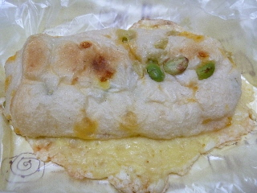
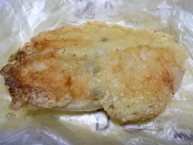
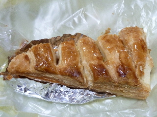
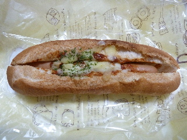
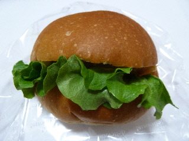
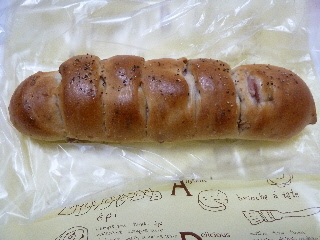

パリクロアッサンのお父さんのえだまめチーズ
2014/12/17

おつまみ用のパンですかね。
枝豆とチーズでビールが美味しく飲めそうです。

ひっくり返すとパリパリのチーズです。
この状態で販売していました。
チーズ味が濃いので、確かにおつまみにヒッタリだなーって思いました。
島根県出雲市大塚町650-1
2014/12/17

おつまみ用のパンですかね。
枝豆とチーズでビールが美味しく飲めそうです。

ひっくり返すとパリパリのチーズです。
この状態で販売していました。
チーズ味が濃いので、確かにおつまみにヒッタリだなーって思いました。
2014/12/03
タイムセールでアップルパイを買いました。
113円です。

アップルパイのわりに銀紙が小さいですね。
なんで？
大き目のアップルパイでした。
中にはちょっと大き目の角切りリンゴとカスタードクリームが入ってて、甘くて美味しかったです。
美味しいお菓子が安く食べれて良かった。
2014/07/14
商品名がチリコンカンドッグになってたと思います。
間違ってたかな？
ソースがチリコンカンになっているのかな？
よく解らなかったです。

フランスパン美味しい。
なんか久々にフランスパンを味わって食べた気がする。
パンはやっぱりパンが美味しくなくちゃ！って思いました。
今日は夜に買い物したので、タイムセールで105円でした。
105円と思ってレジに行ったら、113円でした。
税金が上がってからここで買い物するのは初めてでした。値段はよくよく確認しなきゃ。
でもこのパンは200円オーバーだったので、とってもお得に買えて良かったです。
2014/02/06
新商品だそうです。
パッと見、何が入ってるか分からないですね。
具が見えません。

具は奥の方に入っていました。
チキンカツとチーズは相性がいいですよね。
想像通りの美味しさになると思います。
ドレッシングタイプのものより薄味でヘルシーな感じでした。
2013/11/28
新作のパンのようです。
そう書いてあったので気になって買ってみました。

クルミパンとベーコンパンが合体したパンでした。
クルミが当たればクルミパン。ベーコンがあたればバーコンパンの味がしました。
1つで2つの味わいでした。
両方当たればちょっと複雑な味わいです。
ゆめタウン出雲のパン屋さん。